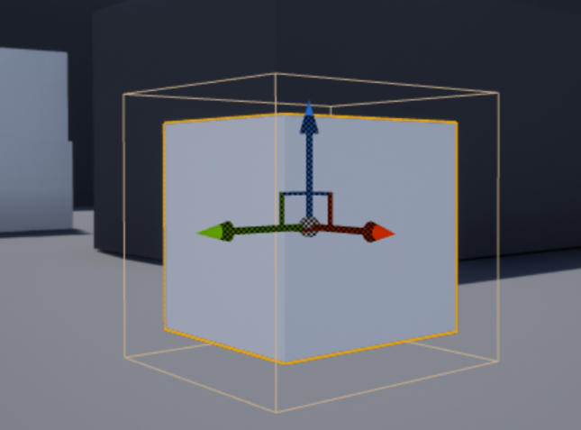

注册组件的 hit 事件
接上一节教程，在本教程中，我们将学习如何在组件上注册一个 hit 事件。创建一个新的 C++ Actor 子类并将其命名为 OnComponentHit 。在头文件中，将声明一个 UBoxComponent 变量和一个当组件注册一个 hit 事件时运行的 void 函数。
下面是最终的头文件
OnHitComponent.h
#pragma once
#include "CoreMinimal.h"
#include "GameFramework/Actor.h"
#include "OnComponentHit.generated.h"
UCLASS()
class UNREALCPP_API AOnComponentHit : public AActor
{
GENERATED_BODY()
public:
// Sets default values for this actor's properties
AOnComponentHit();
protected:
// Called when the game starts or when spawned
virtual void BeginPlay() override;
public:
// Called every frame
virtual void Tick(float DeltaTime) override;
UPROPERTY(VisibleAnywhere)
class UBoxComponent* MyComp;
UFUNCTION()
void OnCompHit(UPrimitiveComponent* HitComp, AActor* OtherActor, UPrimitiveComponent* OtherComp, FVector NormalImpulse, const FHitResult& Hit);
};
在 .cpp 文件中，首先 `
include "Components/BoxComponent.h"` 头文件 。
#include "OnComponentHit.h"
// include files
#include "Components/BoxComponent.h"
接下来，我们将在 actor 的构造函数中为 actor 设置默认值。我们将用 UBoxComponent 初始化 actor，并将其设置为 RootComponent 。然后，我们将添加 OnComponentHit 到组件，并将它连接到我们的 OnCompHit 函数。我们将在下一步创建 OnCompHit （回调函数）。我还将默认的 CollisionProfileName 设置为 BlockAllDynamic ，这可以稍后在编辑器中更改。
// Sets default values
AOnComponentHit::AOnComponentHit()
{
// Set this actor to call Tick() every frame. You can turn this off to improve performance if you don't need it.
PrimaryActorTick.bCanEverTick = true;
// 使用球体作为简单的碰撞表示
MyComp = CreateDefaultSubobject<UBoxComponent>(TEXT("BoxComp"));
MyComp->SetSimulatePhysics(true);
MyComp->SetNotifyRigidBodyCollision(true);
MyComp->BodyInstance.SetCollisionProfileName("BlockAllDynamic");
MyComp->OnComponentHit.AddDynamic(this, &AOnComponentHit::OnCompHit);
// 设置为根组件
RootComponent = MyComp;
}
现在让我们创建简单的 OnCompHit 函数，当我们的 actor 撞击它时，它将打印并显示其他 actor 的名字到屏幕上。关于 OnComponentHit 的更多信息，你可以在访问一些不错的 AnswerHub 帖子1 、帖子2 ，或者在这里访问 ue4 文档 。
void AOnComponentHit::OnCompHit(UPrimitiveComponent* HitComp, AActor* OtherActor, UPrimitiveComponent* OtherComp, FVector NormalImpulse, const FHitResult& Hit)
{
if ((OtherActor != NULL) && (OtherActor != this) && (OtherComp != NULL))
{
if (GEngine) GEngine->AddOnScreenDebugMessage(-1, 5.f, FColor::Green, FString::Printf(TEXT("I Hit: %s"), *OtherActor->GetName()));
}
}
以下就是最终完整的 .cpp 文件
#include "OnComponentHit.h"
#include "Components/BoxComponent.h"
// Sets default values
AOnComponentHit::AOnComponentHit()
{
// Set this actor to call Tick() every frame. You can turn this off to improve performance if you don't need it.
PrimaryActorTick.bCanEverTick = true;
// Use a sphere as a simple collision representation
MyComp = CreateDefaultSubobject<UBoxComponent>(TEXT("BoxComp"));
MyComp->SetSimulatePhysics(true);
MyComp->SetNotifyRigidBodyCollision(true);
MyComp->BodyInstance.SetCollisionProfileName("BlockAllDynamic");
MyComp->OnComponentHit.AddDynamic(this, &AOnComponentHit::OnCompHit);
// Set as root component
RootComponent = MyComp;
}
// Called when the game starts or when spawned
void AOnComponentHit::BeginPlay()
{
Super::BeginPlay();
}
// Called every frame
void AOnComponentHit::Tick(float DeltaTime)
{
Super::Tick(DeltaTime);
}
void AOnComponentHit::OnCompHit(UPrimitiveComponent* HitComp, AActor* OtherActor, UPrimitiveComponent* OtherComp, FVector NormalImpulse, const FHitResult& Hit)
{
if ((OtherActor != NULL) && (OtherActor != this) && (OtherComp != NULL))
{
if (GEngine) GEngine->AddOnScreenDebugMessage(-1, 5.f, FColor::Green, FString::Printf(TEXT("I Hit: %s"), *OtherActor->GetName()));
}
}
编译代码。将 actor 拖放到游戏场景中。添加一个静态网格到该 actor，并调整尺寸以适应 hit 框。当你按下 play 时，actor 应该注册 hit 事件。

运行的结果